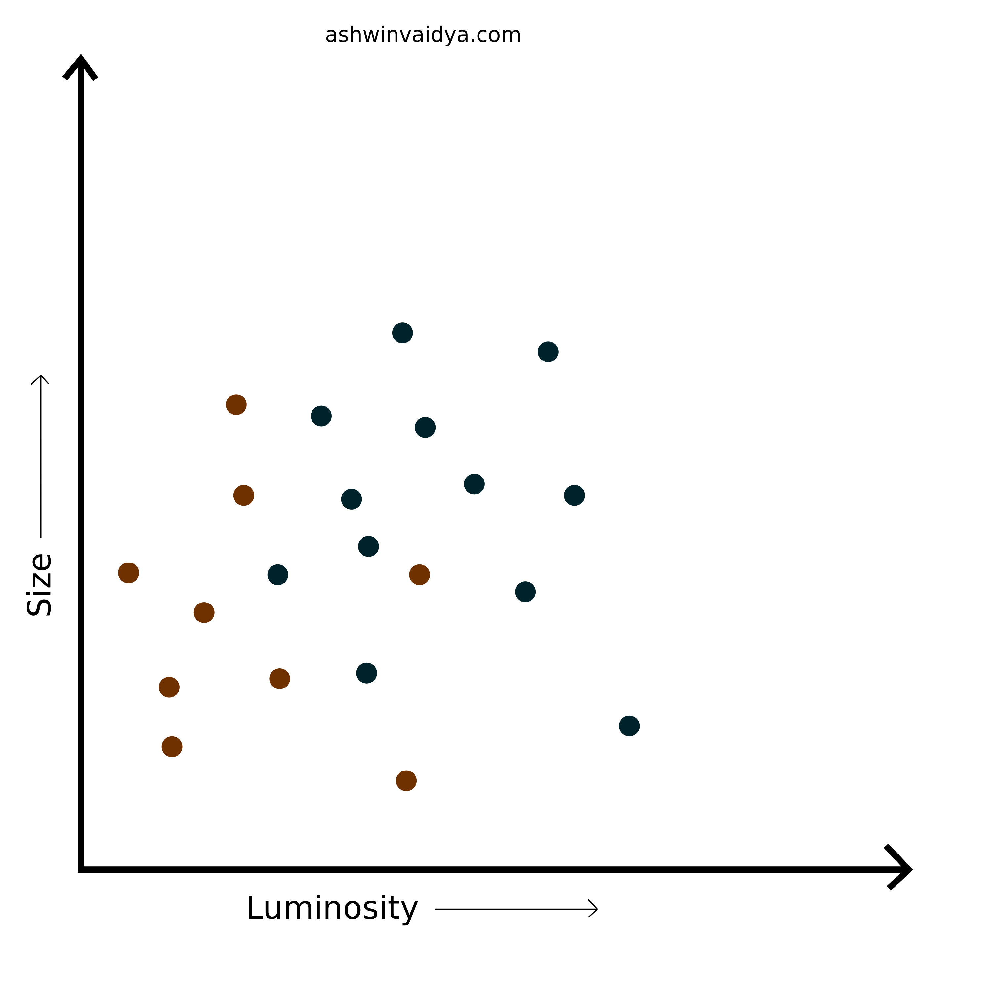
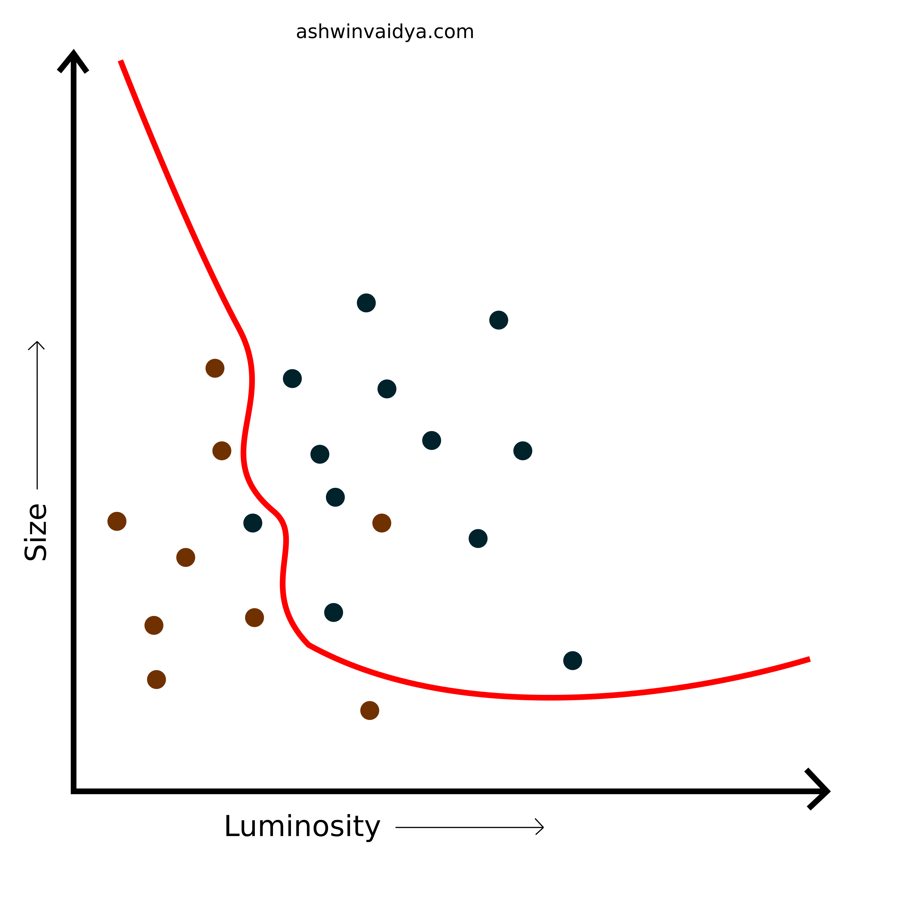
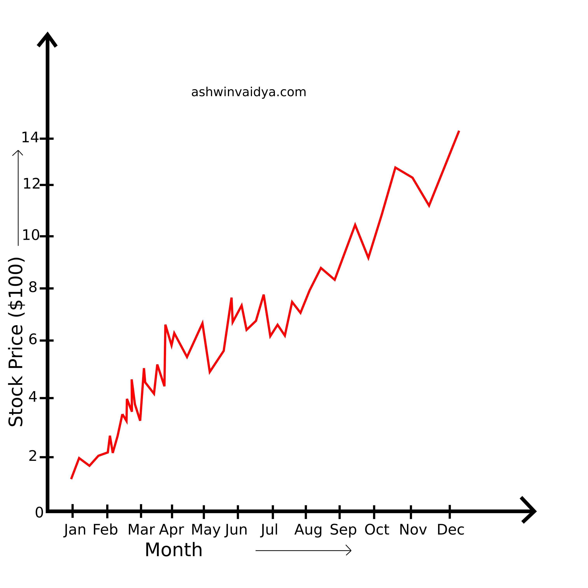
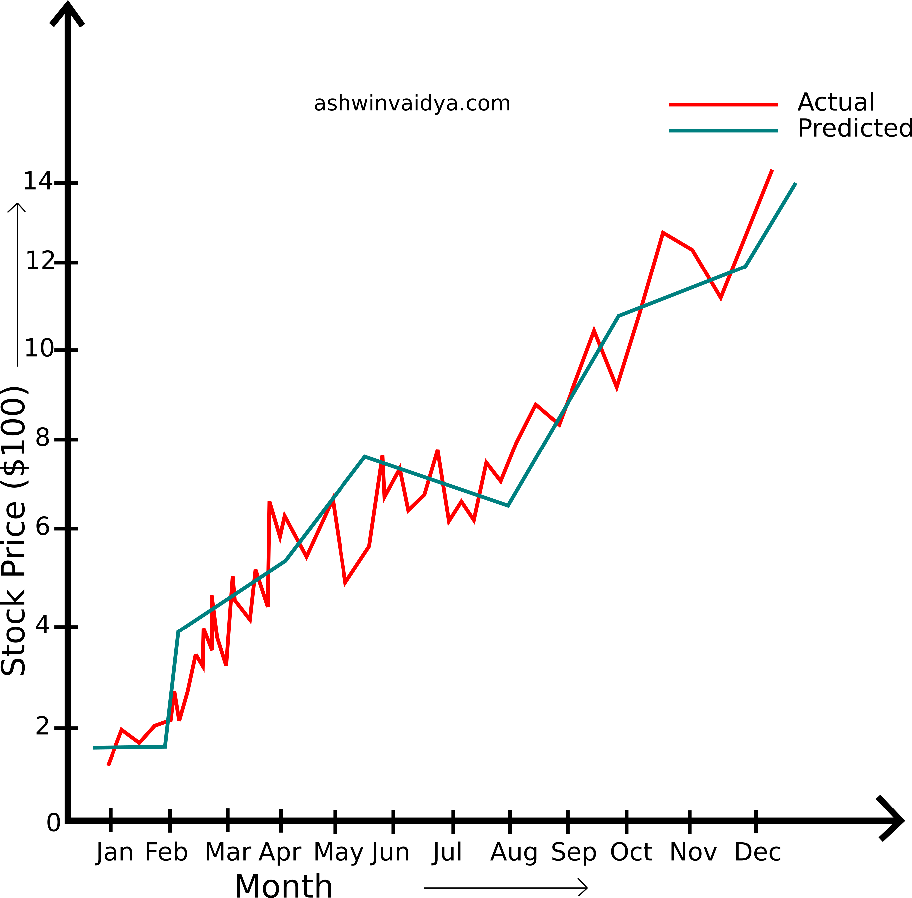
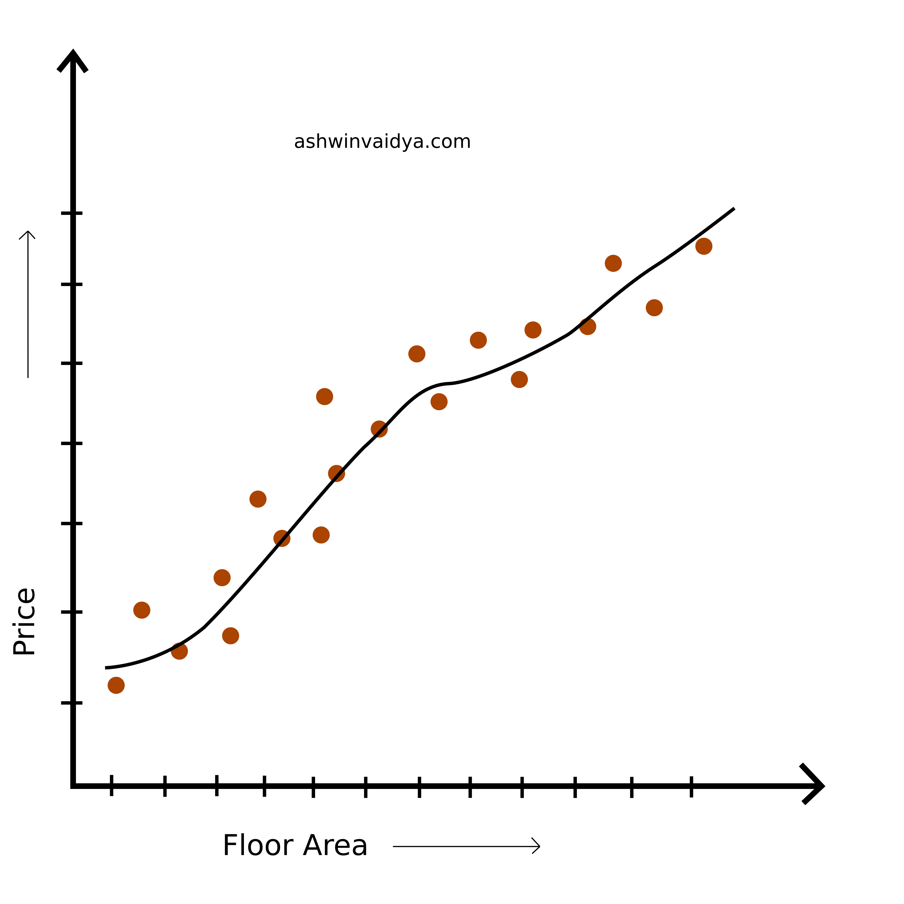
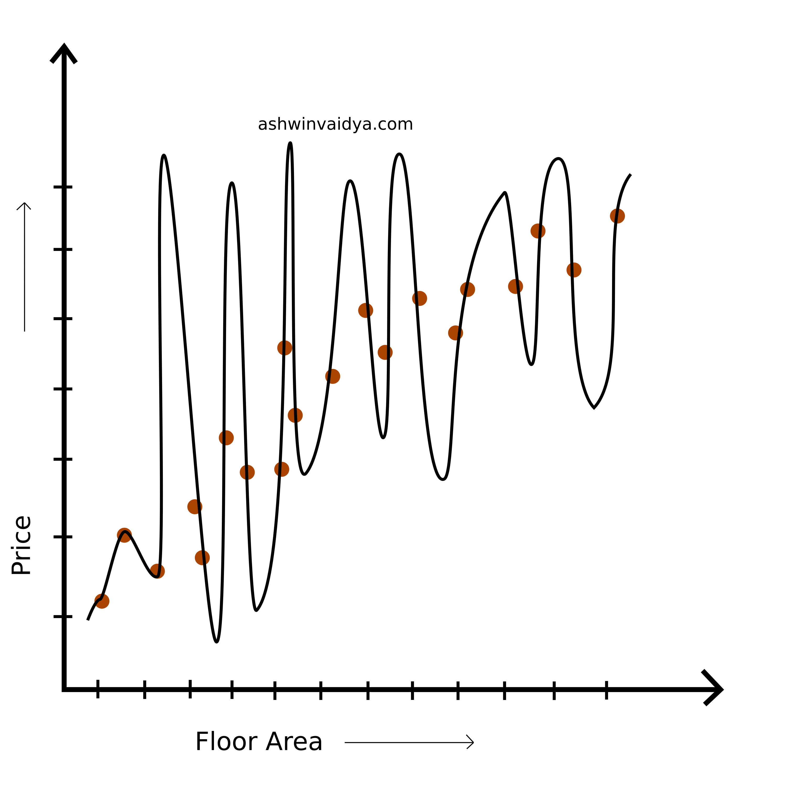
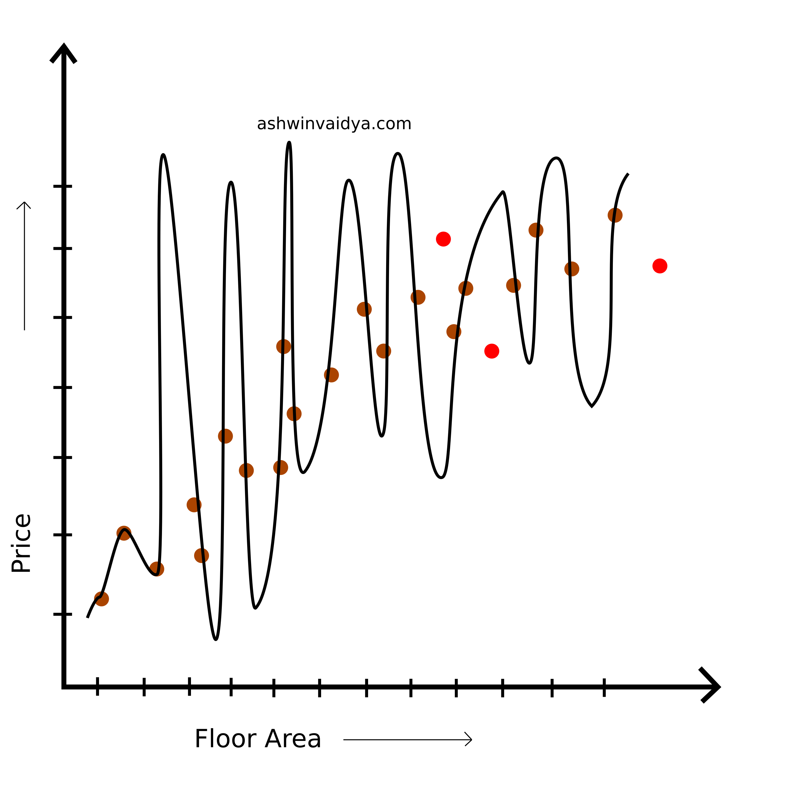

Overfitting vs Underfitting
Table of Contents
Supervised learning tasks are divided into two types, classification and regression. In classification tasks, the machine learning model has to find the decision boundary between the class variables. For example, classifying whether a given image is of a star or a supernova.

Classification

With decision boundary
Note: This is a toy example and the actual plots and parameters may vary.
In regression tasks, the machine learning model has to predict continuous values such as stock prices. Here, the model needs to find the best fit curve that approximates the unknown mapping function.

Stock Prices

Predicting continuous values
In the following discussion, I will focus on the regression example, but the idea presented is applicable to classification tasks as well.
Consider the following data points for the task of predicting house prices.
Now, a curve can be fit onto the data which gives some prediction on the data.

However, we can come up with a better fit onto the data.

And what about the following curve? It passes through all the points.

Surely, this is the best curve, right? No! Even though it fits the data well, it does not generalize well. What do I mean by generalizing? Consider that that we now have access to more data points.

This clearly does fit the new data. This model has internalized the training data. There is no guarantee that the data not yet observed will map to this equation. The prediction might be way off. What we need is a trade-off. Something that fits the original data and can predict the unknown data with realibility.
Overfitting
When the model does not generalize well for new data but fits the training data too well, it is called overfitting.
Underfitting
When the model does not generalize well and does not even fit the training data, it is called underfitting.
Hey! You have reached the end 😎. Thanks for reading.
I would appreciate if you leave a comment below. Your suggestions will help me improve.
Subscribe to stay updated and say Hi! to me on twitter if you wish to.